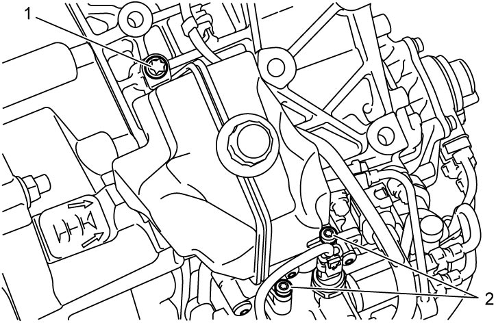
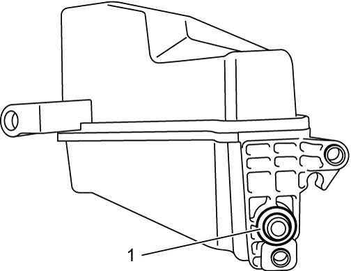

5F
| Twin Clutch System Actuation Fluid Reservoir Removal and Installation |
Removal
1)Perform “Hydraulic Circuit Depressurization” function under “Utility” mode on SUZUKI scan tool referring Hydraulic Circuit Depressurization Procedure.
2)Remove air cleaner bracket. 
3)Remove battery and battery tray.
4)Remove twin clutch system actuation fluid reservoir bolt No.1 (1) and twin clutch system actuation fluid reservoir bolt No.2 (2) and then remove reservoir.


 "Expand image")
5)Remove O-ring (1) from reservoir.

 "Expand image")
Installation
Reverse removal procedure noting the following points.
•Use new O-ring.
•Tighten twin clutch system actuation fluid reservoir bolt No.1 and twin clutch system actuation fluid reservoir bolt No.2 to specified torque.
Twin clutch system actuation fluid reservoir bolt No.2: 10 N·m (1.0 kgf-m, 7.5 lbf-ft)
•After replacing twin clutch system actuation fluid reservoir, perform TCM and Clutch Initialization.
•Tighten twin clutch system actuation fluid reservoir bolt No.1 and twin clutch system actuation fluid reservoir bolt No.2 to specified torque.
Tightening torque
Twin clutch system actuation fluid reservoir bolt No.1: 10 N·m (1.0 kgf-m, 7.5 lbf-ft)Twin clutch system actuation fluid reservoir bolt No.2: 10 N·m (1.0 kgf-m, 7.5 lbf-ft)